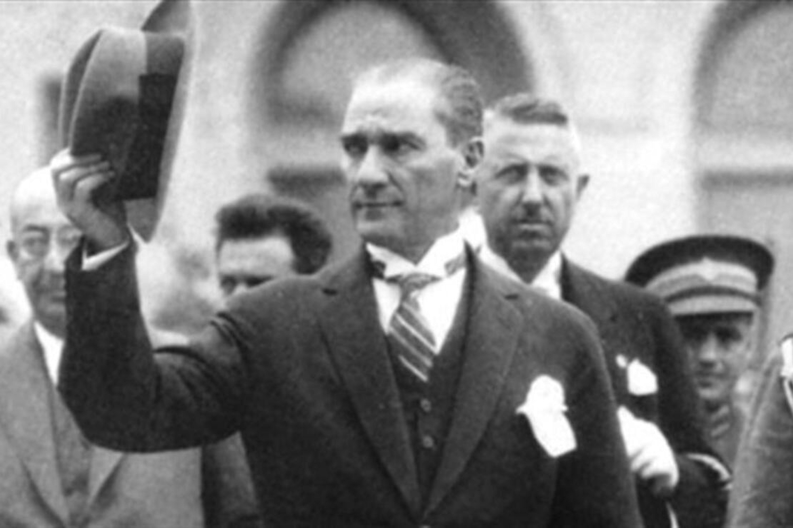

Mustafa Kemal Atatürk
Eternal Chief, Reformer, Savior

Atatürk saluting the people who come to see him during his visit to an Anatolian city.
Here's a time line of Atatürk's life and his reforms:
- 1881 - Mustafa (Kemal Atatürk) born in Salonica (Selanik).
- 1905 - Passes out as Staff Captain and is posted for Fifth Army in Syria; revives a secret opposition group in Damascus.
- 1915 - Mustafa Kemal leaves Sofia to take up appointment as commander of 19th division for service in Battle of Gallipoli.
- 1919 - Mustafa Kemal elected Chairman of Erzurum Congress.
- 1920 - Mustafa Kemal opens the Turkish Grand National Assembly (TBMM) in Ankara.
- 1921 - Appointed Commander-in-Chief by the Grand National Assembly. The battle of Sakarya begins with Turkish troops led by Mustafa Kemal. Mustafa Kemal receives the rank of Marshal and the title Gazi (veteran, victorious warrior).
- 1923 - Proclamation of the Republic of Turkey. Elected first president.
- 1938 - Passes away.
"The name of Atatürk brings to mind the historic accomplishments of one of the great men of this century, his inspired leadership of the Turkish People, his perceptive understanding of the modern world and his boldness as a military leader."
-- John F. Kennedy
If you have time, you should read more about this incredible human being on his Wikipedia entry.